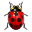

Contribute
You don't need to be a programmer to help make Basket Note Pads a great application.
We are searching for translators, packagers, artists, and bug reporters.
Just contact us and we will be happy to include your contribution to Basket Note Pads.
Questions, Praise, Comments
 Questions on Launchpad
Questions on Launchpad
 Mail The Maintainer
Mail The Maintainer
For quick help or immediate contact you can write a mail to the maintainer.
Basket is currently maintained by Gleb Baryshev.
 Join us in IRC
Join us in IRC
For fast help or a quick chat you can meet the developers on the #basket-devel channel on the irc.freenode.net server.
 Visit us on KDE-Apps.org
Visit us on KDE-Apps.org
KDE-Apps.org is a directory for KDE applications, so naturally you can find Basket Note Pads there.
There you can get in contanct with other Basket users and comment on the application itself. You can also vote Basket (up or down), so please vote and let us and other users know how you feel.
Discussions
 Development Mailing List
Development Mailing List
Development discussions take place in public. If you are interested in following or contributing to those discussions this is the place to be. Discussions generally revolve around things like
- User support
- Possible new features
- Finding and fixing bugs
- Release planing
- And general management
To get a look at past topics you can browse the archives.
To join the discussions all you have to do is to subscribe to the mailing list to be able to send emails there.
Bugs
 Report Bugs
You can help us by making us aware of bugs in Basket Note Pads, giving instructions how to reproduce them or even fixing them.
You can do so by talking to us on IRC, on the Mailing List, submitting bug reports, commenting and voting on them as well as helping us hunt down already reported bugs.
Code
 Get The Source Code
Get The Source Code
You can find our code repository on GitHub:
github.com/basket-notepads/basket
The repository contains the project's most recent code and probably some features in development.
So we recomend you to backup your data before doing any testing or development.
We're trying to keep the code compilable and usable, but remember: it's not a public release, so sometimes it can be hardly usable for daily needs.
In those cases, get in contanct with the developers or retry a few days later.
You can find instructions to download or clone the repository on Basket project page on GitHub. The README file in the repository contains detailed instructions on how to build Basket and on how you can have your changes integrated into the main repository.
Basket for KDE3
The old KDE3 code has been completely imported into the Git repository above (including the branches), so those are still available.
The maint branch is where the KDE3 code is still being kept. It is frozen and no work will be done on it except for critical bug fixes.
Developer Documentation
There is no explicit developer documentation available at the moment (except wiki on GitHub). If you need help please turn to the developers via IRC or on the mailing list.
Translations
Help Translating Basket to Your Language
The following information is outdated and will be updated once the KDE 4 port is finished.
If Basket Note Pads is not yet translated to your native language, you can help to make this happen. You can follow the instructions on our translation HOWTO and send us a patch.